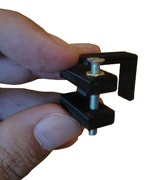
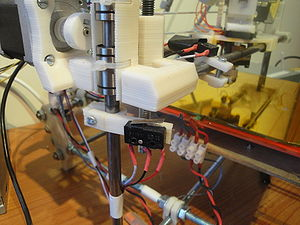
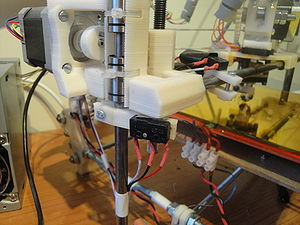
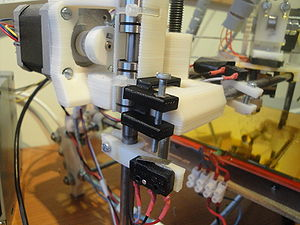
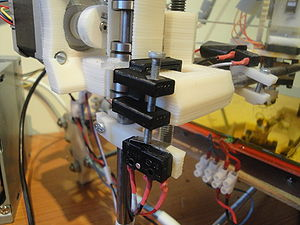

| Regulador de altura en Thingiverse |
|---|


(click para ampliar)
Contenido
[ocultar]Introducción
¿Problemas para ajustar el endstop del eje z? ¿La primera capa está muy alta? ¿Está muy baja?... ¡Aquí está la solución para tu Prusa 2!
Instrucciones
- Imprimir la pieza
- Empotrar una tuerca M3
- Colocar un tornillo M3x25 o más largo
Descarga
| Prusa2-z-height-reg.stl | Pieza en STL |
| Prusa2-z-height-reg.scad | Fuentes, para OpenScad |
Fotos
| Álbum de fotos completo |
|---|
|  Final de carrera del eje z de la Prusa 2. Verión estándar (click para ampliar) |
 (click para ampliar) |
|  El nuevo regulador de altura (click para ampliar) |
 El nuevo reguador de altura activando el final de carrera (click para ampliar) |


Repositorio
- Repositorio SVN: http://svn.iearobotics.com/3D_objects/Prusa-z-height-regulator/
Autor
Créditos
- Inspirado en el regulador de altura para la Printrbot
Licencia
| |
Enlaces
Noticias
- 31/Julio/2012: Primera versión de esta página